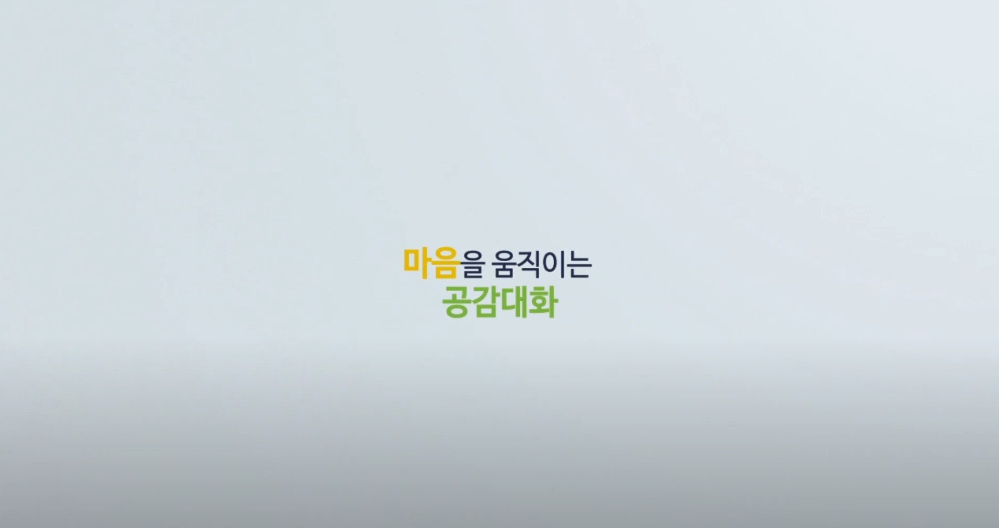
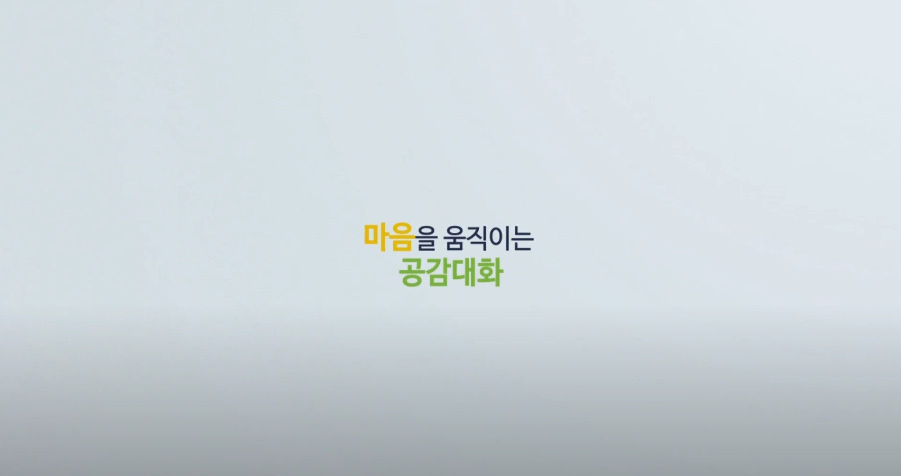

|  |  |
마음을 움직이는 공감대화(1분 정도) 마임을 통해 경청에 필요한 관심과 몰입 느끼기 |
안다미로 2. 가족의 진정한 의미는 무엇일까?(103p) 늘 곁에 있어 소중함을 잊기 쉬운 가족에 대해 다시 생각하며 화목한 가정을 만들기 위한 노력 경주 |
|  | |
마음을 움직이는 공감대화(1분 정도) 마임을 통해 경청에 필요한 관심과 몰입 느끼기 |
안다미로 2. 가족의 진정한 의미는 무엇일까?(103p) 늘 곁에 있어 소중함을 잊기 쉬운 가족에 대해 다시 생각하며 화목한 가정을 만들기 위한 노력 경주 |